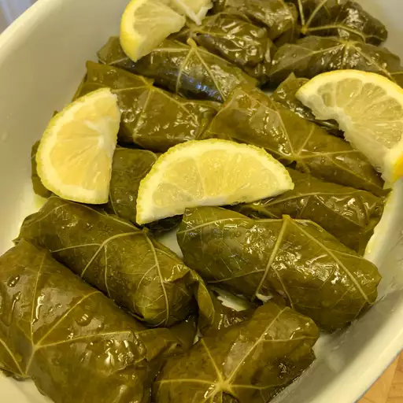

Dolmas Recipe

Stuffed grape leaves?!
The spices may seem like a strange combination, but this is a wonderful, delicate traditional Turkish dish with a twist.
Serve chilled, as is traditional, or warm, as desired. Squeeze fresh lemon juice over dolmas before serving.
Ingredients to prepare the dish
- 1 tablespoon olive oil
- 2 onions, minced
- 1 ½ cups uncooked white rice
- 2 tablespoons tomato paste
- 2 tablespoons dried currants
- 2 tablespoons pine nuts
- 1 tablespoon ground cinnamon
- 1 tablespoon dried mint
- 1 tablespoon dried dill weed
- 1 teaspoon ground allspice
- 1 teaspoon ground cumin
- 1 (8 ounce) jar grape leaves, drained and rinsed
Steps to prepare the dish
- Heat oil in a medium saucepan over medium heat. Saute onions until tender. Stir in rice and hot water to cover.
Cover and simmer until rice is half cooked, about 10 minutes.
- Remove from heat and stir in tomato paste, currants, pine nuts, cinnamon, mint leaves, dill weed, allspice and cumin. Let mixture cool.
- Prepare a large pot by placing an inverted plate on the bottom; this protects the dolmas from direct heat when steaming.
- Rinse grape leaves in warm water; drain and cut off any stems. Place about 1 teaspoon of the cooled rice mixture in the center of a leaf.
Fold in the sides and then roll into a cigar shape. Place in prepared pot. Repeat with remaining ingredients.
- Pour in just enough warm water to reach the bottom of the first layer of dolmas.
Cover and simmer over low heat for 30 to 45 minutes, or until rice is totally cooked. Check the water level often and add more as necessary.